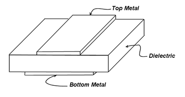
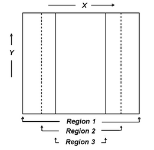
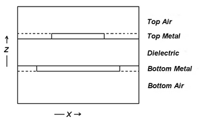
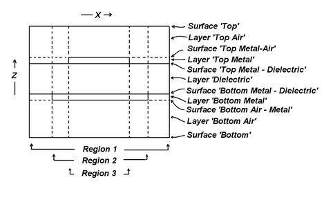

|
Technical Notes | Specification of Three-Dimensional Geometries as Extrusions |

  
|
|
Technical Notes | Specification of Three-Dimensional Geometries as Extrusions |
|
The specification of three-dimensional geometries as extrusions in FlexPDE is based on the decomposition of the object into two parts:
| • | The projection of the object onto the base X-Y plane. |
| • | The division of the extrusion of this projection into layers in the Z dimension. |
Let us take as a model a sandwich formed by a layer of dielectric material with two rectangular conductive patches, top and bottom, with differing dimensions. We wish to model the dielectric, the conductive patches and the surrounding air.

First, we form the projection of this figure onto the X-Y plane, showing all relevant interfaces:

The geometry is specified to FlexPDE primarily in terms of this projection. A preliminary description of the 2D base figure is then:
BOUNDARIES
REGION 1 {this is the outer boundary of the system}
START(0,0)
LINE TO (5,0) TO (5,5) TO (0,5) TO CLOSE
REGION 2 {this region overrides region 1 and describes the larger plate}
START(1,0)
LINE TO (4,0) TO (4,5) TO (1,5) TO CLOSE
REGION 3 {this region overrides region 1 & 2 and describes the smaller plate}
START(2,0)
LINE TO (3,0) TO (3,5) TO (5,3) TO CLOSE
Note that any part of the projection which will have a different stack of material properties above it must be represented by a region. All parts of the projection which will have the same stack of material properties may be included in a single region, even though they may be disjoint in the projection.
Next we view the X-Z cross-section of the sandwich:


The layer structure is specified bottom-up to FlexPDE in the EXTRUSION statement:
EXTRUSION
SURFACE "Bottom" Z=0
LAYER "Bottom Air"
SURFACE "Bottom Air - Metal" Z=0.9
LAYER "Bottom Metal"
SURFACE "Bottom Metal - Dielectric" Z=1
LAYER "dielectric"
SURFACE "Top Metal - Dielectric" Z=2
LAYER "Top Metal"
SURFACE "Top Metal - Air" Z=2.1
LAYER "Top Air"
SURFACE "top" Z=3
The LAYER statements are optional, as are the names of the surfaces. If surfaces and layers are not named, then they must subsequently be referred to by numbers, with surface numbers running in this case from 1 to 6 and layer numbers from 1 to 5. SURFACE 1 is Z=0, and LAYER 1 is between SURFACE 1 and SURFACE 2.
Note: a shorthand form to this specification is:
EXTRUSION Z=(0, 0.9, 1, 2, 2.1, 3)
In this form layers and surfaces must subsequently be referred to by number.
Assume that we have the following DEFINITIONS and EQUATIONS section:
DEFINITIONS
K = Kair {default the dielectric coefficient to the value for air}
Kdiel = 999 {replace 999 with problem value}
Kmetal = 999 {replace 999 with problem value}
EQUATIONS
DIV(K*GRAD(V))
We now modify the BOUNDARIES section to include layering information in the various regions:
BOUNDARIES
REGION 1 {this is the outer boundary of the system}
LAYER "Dielectric" K = Kdiel {all other layers default to Kair}
START(0,0)
LINE TO (5,0) TO (5,5) TO (0,5) TO CLOSE
REGION 2 {this region overrides region 1 and describes the larger plate}
LAYER "Bottom Metal" K = Kmetal
LAYER "Dielectric" K = Kdiel
START(1,0)
LINE TO (4,0) TO (4,5) TO (1,5) TO CLOSE
REGION 3 {this region overrides region 1 & 2 and describes the smaller plate}
LAYER "Bottom Metal" K = Kmetal
LAYER "Dielectric" K = Kdiel
LAYER "Top Metal" Kmetal
START(2,0)
LINE TO (3,0) TO (3,5) TO (5,3) TO CLOSE
If layers are not named, then layer numbers must be used in place of the names above. The LAYER specifiers act as group headers, and all definitions following a LAYER specification refer to that layer, until the group is broken by SURFACE, LAYER or START. Definitions which apply to all layers of the region must appear before any LAYER specification.
The specification of boundary conditions proceeds in a similar way. As in the description of 2D problems in FlexPDE, the default boundary condition is always NATURAL(variable)=0. In the X-Y projection of our problem, which forms the basis of our 3D description, we have described the bounding lines of the regions. A boundary condition attached to any of these bounding lines will apply to all layers of the vertical surface formed by extruding the line. Boundary conditions along this surface may be specialized to a layer in the same way as the material properties are specialized to a layer. Assume that we wish to apply a potential of V0 to one end of the lower plate and V1 to the opposite end of the upper plate. We will modify the descriptor in the following way:
BOUNDARIES
REGION 1 { this is the outer boundary of the system }
LAYER "Dielectric" K = Kdiel { all other layers default to Kair }
START(0,0)
LINE TO (5,0) TO (5,5) TO (0,5) TO CLOSE
REGION 2 { this region overrides region 1, and describes the larger plate }
LAYER "Bottom Metal" K = Kmetal
LAYER "Dielectric" K = Kdiel
START(1,0)
LAYER "Bottom Metal" VALUE(V)=V0
LINE TO (4,0)
LAYER "Bottom Metal" NATURAL(V)=0
LINE TO (4,5) TO (1,5) TO CLOSE
REGION 3 { this region overrides regions 1&2, and describes the smaller plate}
LAYER "Bottom Metal" K = Kmetal
LAYER "Dielectric" K = Kdiel
LAYER "Top Metal" K = Kmetal
START(2,0)
LINE TO (3,0) TO (3,5)
LAYER "Top Metal" VALUE(V)=V1
LINE TO (2,5)
LAYER "Top Metal" NATURAL(V)=0
LINE TO CLOSE
The final requirement for boundary condition specification is the attachment of boundary conditions to the X-Y end faces of the extruded figure. This is done by the SURFACE modifier. Suppose we wish to force the bottom surface to V=0 and the top to V=1. We would modify the descriptor as follows:
BOUNDARIES
SURFACE "Bottom" VALUE(V)=0
SURFACE "Top" VALUE(V)=1
REGION 1 { this is the outer boundary of the system }
LAYER "Dielectric" K = Kdiel { all other layers default to Kair }
START(0,0)
LINE TO (5,0) TO (5,5) TO (0,5) TO CLOSE
REGION 2 { this region overrides region 1, and describes the larger plate }
LAYER "Bottom Metal" K = Kmetal
LAYER "Dielectric" K = Kdiel
START(1,0)
LAYER "Bottom Metal" VALUE(V)=V0
LINE TO (4,0)
LAYER "Bottom Metal" NATURAL(V)=0
LINE TO (4,5) TO (1,5) TO CLOSE
REGION 3 { this region overrides regions 1&2, and describes the smaller plate}
LAYER "Bottom Metal" K = Kmetal
LAYER "Dielectric" K = Kdiel
LAYER "Top Metal" K = Kmetal
START(2,0)
LINE TO (3,0) TO (3,5)
LAYER "Top Metal" VALUE(V)=V1
LINE TO (2,5)
LAYER "Top Metal" NATURAL(V)=0
LINE TO CLOSE
Observe that since the SURFACE statements lie outside any REGION specification, they apply to all regions of the surface. To specialize the SURFACE statement to a specific region, it should be included within the REGION definition.
In this example, we have used named surfaces and layers. The same effect can be achieved by omitting the layer names and specifying layers and surfaces by number:
BOUNDARIES
SURFACE 1 VALUE(V)=0
SURFACE 6 VALUE(V)=1
REGION 1 { this is the outer boundary of the system }
LAYER 3 K = Kdiel { all other layers default to Kair }
START(0,0)
LINE TO (5,0) TO (5,5) TO (0,5) TO CLOSE
REGION 2 { this region overrides region 1, and describes the larger plate }
LAYER 2 K = Kmetal
LAYER 3 K = Kdiel
START(1,0)
LAYER 2 VALUE(V)=V0
LINE TO (4,0)
LAYER 2 NATURAL(V)=0
LINE TO (4,5) TO (1,5) TO CLOSE
REGION 3 { this region overrides regions 1&2, and describes the smaller plate}
LAYER 2 K = Kmetal
LAYER 3 K = Kdiel
LAYER 4 K = Kmetal
START(2,0)
LINE TO (3,0) TO (3,5)
LAYER 4 VALUE(V)=V1
LINE TO (2,5)
LAYER 4 NATURAL(V)=0
LINE TO CLOSE
Remember that in our terminology a REGION refers to an area in the projected base plane, while a LAYER refers to a section of the Z-extrusion. A particular 3D chunk of the figure is uniquely identified by the intersection of a REGION and a LAYER.
A completed form of the descriptor outlined here may be found in the sample problem "Samples | Usage | 3D_Domains | 3D_Extrusion_spec.pde". A slightly more complex and interesting variation may be found in "Samples | Applications | Electricity | 3D_Capacitor.pde".
Page url: index.html?extrusion_spec.html